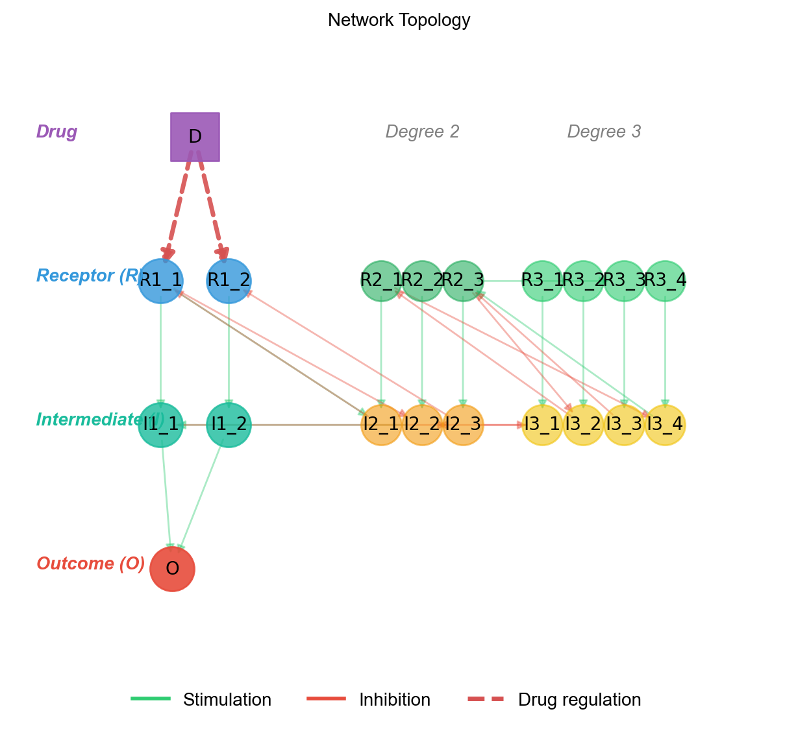

Network & Drug Design
Understanding Degree Cascades
The degree_cascades parameter defines the hierarchical structure of the signaling network. Each element specifies the number of parallel cascades at that degree:
vc = Builder.specify(degree_cascades=[3, 6, 15])
This creates:
- Degree 1 (3 cascades):
R1_1,R1_2,R1_3(receptors) andI1_1,I1_2,I1_3(intermediates) - Degree 2 (6 cascades):
R2_1...R2_6andI2_1...I2_6 - Degree 3 (15 cascades):
R3_1...R3_15andI3_1...I3_15 - Outcome:
O(inactive) andOa(activated)
Species Naming Convention
| Pattern | Meaning | Example |
|---|---|---|
R{deg}_{idx} |
Receptor species at degree deg |
R1_1, R2_3 |
I{deg}_{idx} |
Intermediate species at degree deg |
I1_1, I3_15 |
{name}a |
Activated form of a species | R1_1a, I2_1a, Oa |
O / Oa |
Outcome species (inactive / active) | — |
Network Topology
Each cascade at degree d creates the reaction R{d}_{i} -> I{d}_{i}. Degree 1 intermediates connect to the outcome (I1_{i} -> O). Species at higher degrees regulate lower-degree species through the network's hierarchical structure.

Green edges indicate stimulation, red edges indicate inhibition, and dashed purple edges indicate drug regulation.
Drug (D)
|
v
R1_1 -> I1_1 --+
R1_2 -> I1_2 --+--> O <-> Oa
R1_3 -> I1_3 --+
^ ^
| |
R2_1 .. R2_6 (degree 2 regulators)
^ ^
| |
R3_1 .. R3_15 (degree 3 regulators)
Feedback Regulation
The feedback_density parameter controls the proportion of possible feedback connections in the network:
vc = Builder.specify(
degree_cascades=[3, 6, 15],
feedback_density=0.5, # 50% of possible feedback connections
)
feedback_density=0: No feedback (purely feed-forward hierarchy)feedback_density=1: Maximum feedback connections- Feedback loops connect species across different degrees, creating more realistic network dynamics
Building with VirtualCell
Auto-Compile (Default)
The simplest pattern uses Builder.specify() which auto-compiles the model:
from synthetic import Builder
vc = Builder.specify(
degree_cascades=[1, 2, 5],
random_seed=42,
feedback_density=0.5,
)
# Model is ready to use immediately
Manual Control
For custom drug configurations, disable auto-compile and add drugs manually:
from synthetic import Builder
vc = Builder.specify(
degree_cascades=[5, 10, 15],
auto_drug=False,
auto_compile=False,
)
# Add drugs, then compile
vc.add_drug(name="DrugA", ...)
vc.compile()
Compile Options
The compile() method accepts parameters for initial conditions and kinetic tuning:
vc.compile(
mean_range_species=(50, 150), # Initial concentration range
rangeScale_params=(0.8, 1.2), # Parameter scaling range
rangeMultiplier_params=(0.9, 1.1), # Additional parameter variation
use_kinetic_tuner=True, # Enable kinetic parameter tuning
active_percentage_range=(0.3, 0.7), # Target 30-70% active states
)
Adding Drugs
Auto-Drug (Default)
By default, Builder.specify() creates a drug targeting all degree 1 receptor species:
vc = Builder.specify(degree_cascades=[3, 6, 15])
# Auto-drug "D" targets R1_1, R1_2, R1_3 with down-regulation
Customize the auto-drug parameters:
vc = Builder.specify(
degree_cascades=[3, 6, 15],
drug_name="Inhibitor",
drug_start_time=5000.0,
drug_value=100.0,
drug_regulation_type="down",
)
Manual Drug Addition
Add drugs manually by setting auto_drug=False:
vc = Builder.specify(
degree_cascades=[1, 2, 5],
auto_drug=False,
auto_compile=False,
)
vc.add_drug(
name="DrugX",
start_time=500.0,
default_value=0.0,
regulation=["R1_1", "R1_2"],
regulation_type=["down", "down"],
value=100.0,
)
vc.compile()
Method Chaining
add_drug() returns self, enabling method chaining:
vc = Builder.specify([5, 10, 15], auto_drug=False, auto_compile=False)
vc.add_drug(
name="Drug_A",
start_time=5000.0,
regulation=["R1_1", "R1_2"],
regulation_type=["down", "down"],
value=100.0,
).add_drug(
name="Drug_B",
start_time=5000.0,
regulation=["R1_3", "R1_4"],
regulation_type=["down", "down"],
value=100.0,
).compile()
Inspecting Drugs
List all drugs in the system:
drugs = vc.list_drugs()
for drug in drugs:
print(f"Drug: {drug['name']}, Targets: {drug['targets']}, Types: {drug['types']}")
Drug Targeting Rules
- Drugs must target degree 1 R species (e.g.,
R1_1,R1_2) - Regulation types:
"up"(stimulator effect) or"down"(inhibitor effect) - Drugs appear at
start_timevia piecewise assignment rules
Combination Therapy
Add multiple drugs targeting different pathways to model combination therapy:
from synthetic import Builder, make_dataset_drug_response
vc = Builder.specify([5, 10, 15], auto_drug=False, auto_compile=False)
# Drug A targets pathway 1
vc.add_drug(
name="Drug_A",
start_time=5000.0,
default_value=0.0,
regulation=["R1_1", "R1_2"],
regulation_type=["down", "down"],
value=100.0,
)
# Drug B targets pathway 2
vc.add_drug(
name="Drug_B",
start_time=5000.0,
default_value=0.0,
regulation=["R1_3", "R1_4"],
regulation_type=["down", "down"],
value=100.0,
)
vc.compile()
# Generate dataset reflecting combined drug effects
X, y = make_dataset_drug_response(n=500, cell_model=vc, target_specie='Oa')
This enables you to:
- Test drug combinations with different targets
- Model synergistic or antagonistic effects
- Compare single-drug vs. combination therapies
- Validate combination therapy prediction algorithms
Accessing the Model
After compilation, access the underlying components:
vc = Builder.specify(degree_cascades=[1, 2, 5])
# DegreeInteractionSpec - network specification
spec = vc.spec
print(spec.species_list)
# ModelBuilder - the compiled ODE model
model = vc.model
print(f"Species: {len(model.get_state_variables())}")
print(f"Parameters: {len(model.get_parameters())}")
# KineticParameterTuner - if kinetic tuning was used
tuner = vc.tuner
if tuner is not None:
targets = tuner.get_target_concentrations()
for species, concentration in targets.items():
print(f"{species}: {concentration:.3f}")